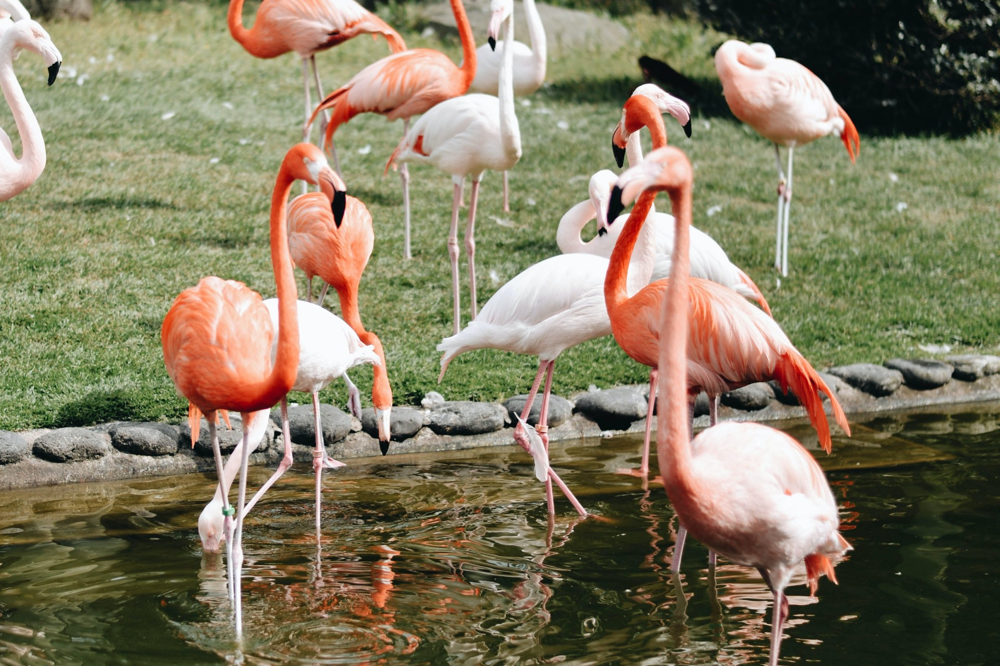

Find Fukuoka

Top Activities

Hakata Ramen
Rich and flavorful pork-bone broth. Chose your preferred noodle firmness, and get a noodle refill!
Learn More
Food Stalls (Yatai)
Great place to meet locals or visitors alike whiling diggin into the local cultural and food scene
Learn More
Dazaifu Tenmangu Shrine
Pay a visit to the deity of learning, culture, and enjoy a bite of the local speciality rice cake
Learn MoreBy Seasons
Spring
Evening Cherry Blossom in Fukouka Castle

Summer
Marine World at Umi no nakamichi Seaside Park
Fall
Autumn Leaves in Sasaguri
Winter
Oyster Hut BBQ in Itoshima
Your Guide

Jack
(ex-CIR & ALT on the JET Programme)
Fukuoka is my home in Japan. There's a lot to enjoy in any given seasons. Allow me show you around!